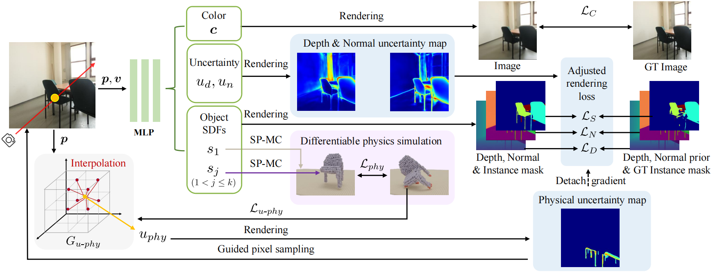

We address the issue of physical implausibility in multi-view neural reconstruction. While implicit representations have gained popularity in multi-view 3D reconstrucion, previous work struggles to yield physically plausible results, limiting their utility in domains requiring rigorous physical accuracy. This lack of plausibility stems from the absence of physics modeling in existing methods and their inability to recover intricate geometrical structures. In this paper, we introduce PHYRECON, the first approach to leverage both differentiable rendering and differentiable physics simulation to learn implicit surface representations. PHYRECON features a novel differentiable particle-based physical simulator built on neural implicit representations. Central to this design is an efficient transformation between SDF-based implicit representations and explicit surface points via our proposed Surface Points Marching Cubes (SP-MC), enabling differentiable learning with both rendering and physical losses. Additionally, PHYRECON models both rendering and physical uncertainty to identify and compensate for inconsistent and inaccurate monocular geometric priors. The physical uncertainty further facilitates physics-guided pixel sampling to enhance the learning of slender structures. By integrating these techniques, our model supports differentiable joint modeling of appearance, geometry, and physics. Extensive experiments demonstrate that PHYRECON significantly improves the reconstruction quality. Our results also exhibit superior physical stability in physical simulators, with at least a 40% improvement across all datasets, paving the way for future physics-based applications.
Our novel framework bridges neural scene reconstruction and physics simulation to achieve the joint modeling of physics, geometry, and appearance. We realize a particle-based physical simulator and a highly efficient method for transitioning from SDF-based neural implicit representations to explicit representations that are conducive to physics simulation. Furthermore, we propose a joint uncertainty modeling approach, encompassing both rendering and physical uncertainty, to mitigate the inconsistencies and improve the reconstruction of thin structures.
Examples from ScanNet++, ScanNet and Replica demonstrate our model produces higher quality reconstructions compared with the baselines. Our results contain finer details for slender structures (chair legs and the objects on the table) and plausible support relations, which are shown in the zoom-in boxes.
We visualize the trajectory for the reconstructed object during dropping simulation in Isaac Gym. Our method enhances the physical plausibility of the reconstruction results, which can remain stable during dropping simulation in Isaac Gym.
Our results exhibit substantial stability improvements in physical simulators compared with existing methods, signaling a broader potential for physics-demanding applications.
@inproceedings{ni2024phyrecon,
title={PhyRecon: Physically Plausible Neural Scene Reconstruction},
author={Ni, Junfeng and Chen, Yixin and Jing, Bohan and Jiang, Nan and Wang, Bin and Dai, Bo and Li, Puhao and Zhu, Yixin and Zhu, Song-Chun and Huang, Siyuan},
journal={Advances in Neural Information Processing Systems},
year={2024}
}